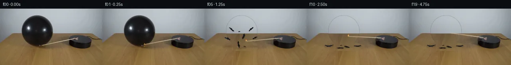

![首帧]()

Round 00
2026-11-05T12:02:25.604736+00:00像素候选变化代码 +405/−0inspection 更新
pixels 192b4499498d60c1 · code 99263da01d21ee5d
查看本轮 generate.py 真实 diff
--- previous/generate.py
+++ current/generate.py
@@ -0,0 +1,405 @@
+"""PixelWorld continuation using only local source pixels and analytic drawing.
+
+No image-view tool, models, physics engines, network or external scene assets.
+Run from this workspace: python generate.py
+"""
+from pathlib import Path
+import json
+import math
+import numpy as np
+from PIL import Image, ImageDraw
+from scipy.ndimage import map_coordinates, gaussian_filter, binary_erosion, binary_dilation
+from artifact_io import save
+
+ROOT = Path(__file__).resolve().parent
+SOURCE = np.asarray(Image.open(ROOT / 'first_frame.png').convert('RGB'))
+H, W = SOURCE.shape[:2]
+Y, X = np.mgrid[:H, :W].astype(float)
+A = SOURCE.astype(float)
+RNG = np.random.default_rng(113)
+S = 4
+HY, HX = np.mgrid[:H*S, :W*S].astype(float)
+HX = (HX + .5)/S - .5
+HY = (HY + .5)/S - .5
+PIVOT = np.array([193.5, 75.2])
+TIP = np.array([105.8, 93.4])
+VEC = TIP - PIVOT
+ANGLES = np.array([0, 1.2, 2.4, 3.8, 5.2, 6.7, 8.2, 9.8, 11.4,
+ 13, 14.6, 16, 17.2, 18.2, 19, 19.5, 19.8, 20, 20, 20])
+
+
+def down(a):
+ shape = (H, S, W, S) + a.shape[2:]
+ return a.reshape(shape).mean(axis=(1, 3))
+
+
+def sample(a, x, y):
+ if a.ndim == 2:
+ return map_coordinates(a, [y, x], order=1, mode='nearest')
+ return np.stack([map_coordinates(a[..., c], [y, x], order=1,
+ mode='nearest') for c in range(a.shape[2])], -1)
+
+
+def composite(bg, rgb, alpha):
+ return bg*(1-alpha[..., None]) + rgb*alpha[..., None]
+
+
+def poly_features(x, y, degree=3):
+ x = (x-128)/128
+ y = (y-72)/72
+ return np.stack([x**i*y**j for i in range(degree+1)
+ for j in range(degree+1-i)], -1)
+
+
+def fit_plate(valid, degree):
+ f = poly_features(X, Y, degree)
+ coef = np.linalg.lstsq(f[valid], A[valid], rcond=None)[0]
+ return f @ coef
+
+
+def prepare_plates():
+ # The pale shaft is removed using narrow normal-direction donor samples.
+ vector = PIVOT-TIP
+ length = np.linalg.norm(vector)
+ along = vector/length
+ normal = np.array([-along[1], along[0]])
+ dx, dy = X-TIP[0], Y-TIP[1]
+ t = dx*along[0]+dy*along[1]
+ d = dx*normal[0]+dy*normal[1]
+ shaft_region = (t > -2.5) & (t < length+1.2) & (abs(d) < 3.4)
+ lower = np.mean([sample(A, X+normal[0]*k, Y+normal[1]*k)
+ for k in (4.5, 5.5, 6.5)], axis=0)
+ upper = np.mean([sample(A, X-normal[0]*k, Y-normal[1]*k)
+ for k in (4.5, 5.5, 6.5)], axis=0)
+ # At the free end, the upper donor could cross the balloon silhouette.
+ fill = np.where(((X < 139) & (Y > 83))[..., None], lower, (upper+lower)*.5)
+ mount = (X > 183) & (X < 197) & (Y > 74) & (Y < 82)
+ # Estimate the unobstructed upper platform surface under the shaft, while
+ # retaining the muted pink mounting material as a stationary layer.
+ mount_fill = sample(A, X, np.full_like(Y, 72.0))
+ fill = np.where(mount[..., None], mount_fill, fill)
+ shaft_clean = np.where(shaft_region[..., None], fill, A)
+ clay = mount & (A[..., 0]-A[..., 1] > 15) & (A[..., 2] > A[..., 1]-13)
+ shaft_clean[clay] = A[clay]
+ predicted_light = np.array([224., 205., 170.])
+ denom = predicted_light - fill
+ numerator = A-fill
+ ma = (numerator*denom).sum(-1)/(denom**2).sum(-1).clip(1)
… diff truncated; 318 more lines …